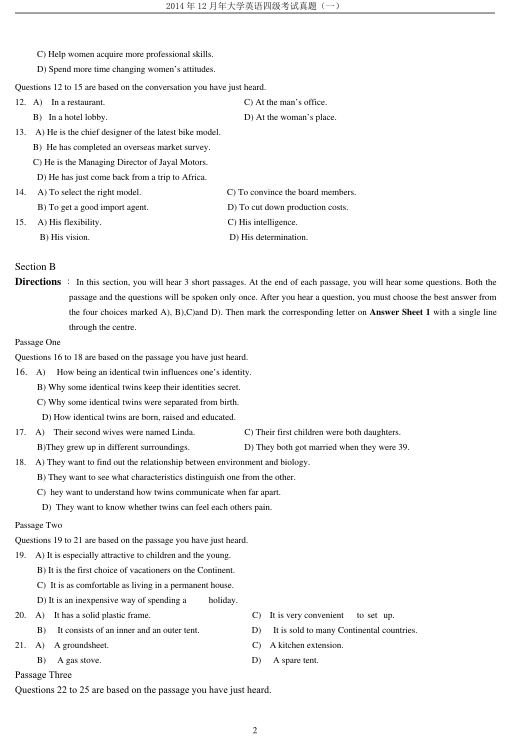
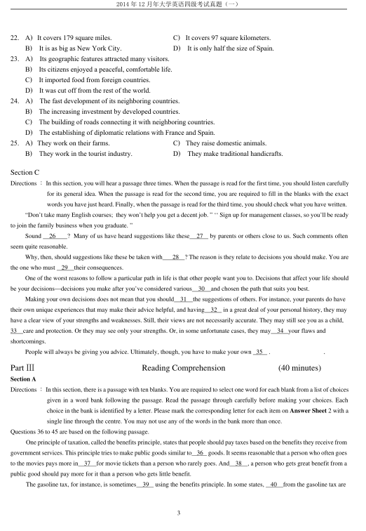
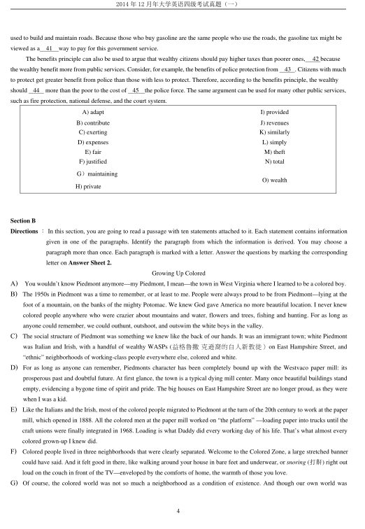
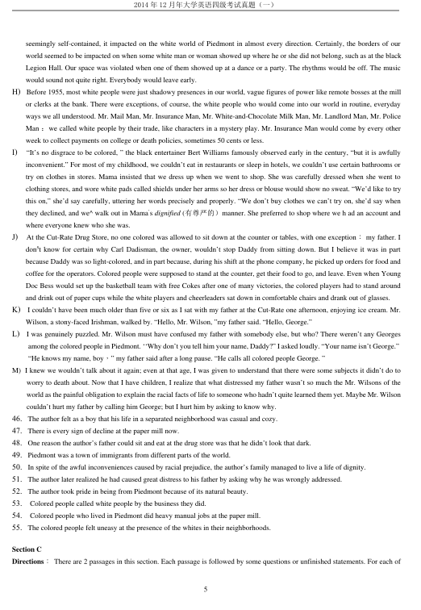
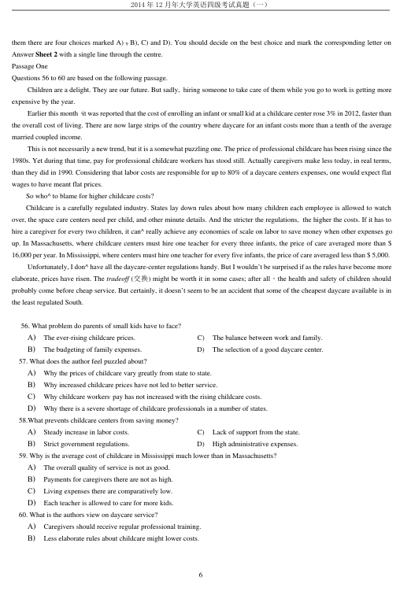
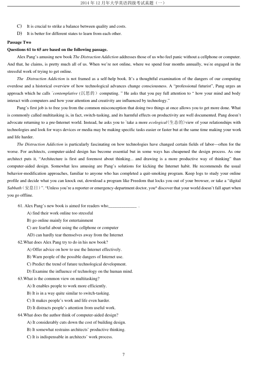
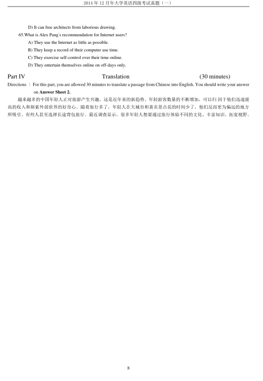

第 1 / 8 页

2014 年12 月年大学英语四级考试真题（一）
1
2014 年12 月大学英语四级考试真题（第1 套)
Part I
Writing
(30 minutes)
Directions ：For this part, you are allowed 30 minutes to write a short essay about a classmate of yours who has influenced you most
in college. You should state the reasons and write at least 120 words but no more than 180 words.
Part II
Listening Comprehension
(30 minutes)
Section A
Directions ：Inthissection,youwillhear8shortconversationsand2longconversations.Attheendofeachconversation,
one or more questions will be asked about what was said. Both the conversation and the questions will be
spoken only once. After each question there will be a pause. During the pause, you must read the four
choices marked A), B), C) and D), and decide which is the best answer. Then mark the corresponding letter
on Answer Sheet 1 with a single line through the centre.
1.
A) The woman is fussy about the cleanness of the apartment.
B) He has not cleaned the apartment since his mothers visit.
C) He does not remember when his mother came over.
D) His mother often helps him to clean the apartment.
2.
A) The bus stop is only two minutes’ walk.
C) They might as well take the next bus.
B) The running made him short of breath.
D) The woman is late by a couple of minutes.
3. A) She is suffering a pain in her neck.
C) She has to do extra work for a few days.
B）She is likely to replace Miss Smith.
D) She is quite sick of working overtime.
4. A) Change her job.
C) Open a flower shop.
B) Buy a dishwasher.
D) Start her own business.
5.
A) He forgot where he had left the package
C) He wanted to deliver the package himself.
B) He slipped on his way to the post office.
D) He failed to do what he promised to do.
6.
A) The speakers do not agree with each other.
C) The man pays for the tickets as a rule.
B) The woman does not like horror films.
D) The speakers happened to meet in the cinema.
7.
A) The woman is just as unlucky as the man.
C) The speakers share a common view on love.
B) The woman is more sensitive than the man.
D) The speakers are unhappy with their marriage.
8.
A) Preparations for a forum.
C) Organizers of a forum.
B) Participants in the forum.
D) Expectations of the forum.
Questions 9 to 11 are based on the conversation you have just heard.
9.
A) France.
C) Russia.
B) Scandinavia
D) East Europe.
10.
A) More women will be promoted in the workplace.
B) More women will overcome their inadequacies.
C) More women will receive higher education.
D) More women will work outside the family.
11.
A) Try hard to protect women’s rights.
B) Educate men to respect women more.
查看 / 复制本页文字
2014 年12 月年大学英语四级考试真题（一） 1 2014 年12 月大学英语四级考试真题（第1 套) Part I Writing (30 minutes) Directions ：For this part, you are allowed 30 minutes to write a short essay about a classmate of yours who has influenced you most in college. You should state the reasons and write at least 120 words but no more than 180 words. Part II Listening Comprehension (30 minutes) Section A Directions ：Inthissection,youwillhear8shortconversationsand2longconversations.Attheendofeachconversation, one or more questions will be asked about what was said. Both the conversation and the questions will be spoken only once. After each question there will be a pause. During the pause, you must read the four choices marked A), B), C) and D), and decide which is the best answer. Then mark the corresponding letter on Answer Sheet 1 with a single line through the centre. 1. A) The woman is fussy about the cleanness of the apartment. B) He has not cleaned the apartment since his mothers visit. C) He does not remember when his mother came over. D) His mother often helps him to clean the apartment. 2. A) The bus stop is only two minutes’ walk. C) They might as well take the next bus. B) The running made him short of breath. D) The woman is late by a couple of minutes. 3. A) She is suffering a pain in her neck. C) She has to do extra work for a few days. B）She is likely to replace Miss Smith. D) She is quite sick of working overtime. 4. A) Change her job. C) Open a flower shop. B) Buy a dishwasher. D) Start her own business. 5. A) He forgot where he had left the package C) He wanted to deliver the package himself. B) He slipped on his way to the post office. D) He failed to do what he promised to do. 6. A) The speakers do not agree with each other. C) The man pays for the tickets as a rule. B) The woman does not like horror films. D) The speakers happened to meet in the cinema. 7. A) The woman is just as unlucky as the man. C) The speakers share a common view on love. B) The woman is more sensitive than the man. D) The speakers are unhappy with their marriage. 8. A) Preparations for a forum. C) Organizers of a forum. B) Participants in the forum. D) Expectations of the forum. Questions 9 to 11 are based on the conversation you have just heard. 9. A) France. C) Russia. B) Scandinavia D) East Europe. 10. A) More women will be promoted in the workplace. B) More women will overcome their inadequacies. C) More women will receive higher education. D) More women will work outside the family. 11. A) Try hard to protect women’s rights. B) Educate men to respect women more.
第 2 / 8 页

2014 年12 月年大学英语四级考试真题（一）
2
C) Help women acquire more professional skills.
D) Spend more time changing women’s attitudes.
Questions 12 to 15 are based on the conversation you have just heard.
12. A)
In a restaurant.
C) At the man’s office.
B) In a hotel lobby.
D) At the woman’s place.
13.
A) He is the chief designer of the latest bike model.
B) He has completed an overseas market survey.
C) He is the Managing Director of Jayal Motors.
D) He has just come back from a trip to Africa.
14.
A) To select the right model.
C) To convince the board members.
B) To get a good import agent.
D) To cut down production costs.
15.
A) His flexibility.
C) His intelligence.
B) His vision.
D) His determination.
Section B
Directions ：In this section, you will hear 3 short passages. At the end of each passage, you will hear some questions. Both the
passage and the questions will be spoken only once. After you hear a question, you must choose the best answer from
the four choices marked A), B),C)and D). Then mark the corresponding letter on Answer Sheet 1 with a single line
through the centre.
Passage One
Questions 16 to 18 are based on the passage you have just heard.
16.
A)
How being an identical twin influences one’s identity.
B) Why some identical twins keep their identities secret.
C) Why some identical twins were separated from birth.
D) How identical twins are born, raised and educated.
17.
A)
Their second wives were named Linda.
C) Their first children were both daughters.
B)They grew up in different surroundings.
D) They both got married when they were 39.
18.
A) They want to find out the relationship between environment and biology.
B) They want to see what characteristics distinguish one from the other.
C) hey want to understand how twins communicate when far apart.
D) They want to know whether twins can feel each others pain.
Passage Two
Questions 19 to 21 are based on the passage you have just heard.
19.
A) It is especially attractive to children and the young.
B) It is the first choice of vacationers on the Continent.
C) It is as comfortable as living in a permanent house.
D) It is an inexpensive way of spending a
holiday.
20.
A)
It has a solid plastic frame.
C)
It is very convenient
to set up.
B)
It consists of an inner and an outer tent.
D)
It is sold to many Continental countries.
21.
A)
A groundsheet.
C)
A kitchen extension.
B)
A gas stove.
D)
A spare tent.
Passage Three
Questions 22 to 25 are based on the passage you have just heard.
查看 / 复制本页文字
2014 年12 月年大学英语四级考试真题（一） 2 C) Help women acquire more professional skills. D) Spend more time changing women’s attitudes. Questions 12 to 15 are based on the conversation you have just heard. 12. A) In a restaurant. C) At the man’s office. B) In a hotel lobby. D) At the woman’s place. 13. A) He is the chief designer of the latest bike model. B) He has completed an overseas market survey. C) He is the Managing Director of Jayal Motors. D) He has just come back from a trip to Africa. 14. A) To select the right model. C) To convince the board members. B) To get a good import agent. D) To cut down production costs. 15. A) His flexibility. C) His intelligence. B) His vision. D) His determination. Section B Directions ：In this section, you will hear 3 short passages. At the end of each passage, you will hear some questions. Both the passage and the questions will be spoken only once. After you hear a question, you must choose the best answer from the four choices marked A), B),C)and D). Then mark the corresponding letter on Answer Sheet 1 with a single line through the centre. Passage One Questions 16 to 18 are based on the passage you have just heard. 16. A) How being an identical twin influences one’s identity. B) Why some identical twins keep their identities secret. C) Why some identical twins were separated from birth. D) How identical twins are born, raised and educated. 17. A) Their second wives were named Linda. C) Their first children were both daughters. B)They grew up in different surroundings. D) They both got married when they were 39. 18. A) They want to find out the relationship between environment and biology. B) They want to see what characteristics distinguish one from the other. C) hey want to understand how twins communicate when far apart. D) They want to know whether twins can feel each others pain. Passage Two Questions 19 to 21 are based on the passage you have just heard. 19. A) It is especially attractive to children and the young. B) It is the first choice of vacationers on the Continent. C) It is as comfortable as living in a permanent house. D) It is an inexpensive way of spending a holiday. 20. A) It has a solid plastic frame. C) It is very convenient to set up. B) It consists of an inner and an outer tent. D) It is sold to many Continental countries. 21. A) A groundsheet. C) A kitchen extension. B) A gas stove. D) A spare tent. Passage Three Questions 22 to 25 are based on the passage you have just heard.
第 3 / 8 页

2014 年12 月年大学英语四级考试真题（一）
3
22. A) It covers 179 square miles.
C) It covers 97 square kilometers.
B) It is as big as New York City.
D) It is only half the size of Spain.
23. A) Its geographic features attracted many visitors.
B) Its citizens enjoyed a peaceful, comfortable life.
C) It imported food from foreign countries.
D) It was cut off from the rest of the world.
24. A) The fast development of its neighboring countries.
B) The increasing investment by developed countries.
C) The building of roads connecting it with neighboring countries.
D) The establishing of diplomatic relations with France and Spain.
25. A) They work on their farms.
C) They raise domestic animals.
B) They work in the tourist industry.
D) They make traditional handicrafts.
Section C
Directions ：In this section, you will hear a passage three times. When the passage is read for the first time, you should listen carefully
for its general idea. When the passage is read for the second time, you are required to fill in the blanks with the exact
words you have just heard. Finally, when the passage is read for the third time, you should check what you have written.
“Don’t take many English courses; they won’t help you get a decent job. ” ‘‘ Sign up for management classes, so you’ll be ready
to join the family business when you graduate. ”
Sound
26
? Many of us have heard suggestions like these
27
by parents or others close to us. Such comments often
seem quite reasonable.
Why, then, should suggestions like these be taken with
28
? The reason is they relate to decisions you should make. You are
the one who must
29
their consequences.
One of the worst reasons to follow a particular path in life is that other people want you to. Decisions that affect your life should
be your decisions—decisions you make after you’ve considered various
30
and chosen the path that suits you best.
Making your own decisions does not mean that you should
31
the suggestions of others. For instance, your parents do have
their own unique experiences that may make their advice helpful, and having
32
in a great deal of your personal history, they may
have a clear view of your strengths and weaknesses. Still, their views are not necessarily accurate. They may still see you as a child,
33
care and protection. Or they may see only your strengths. Or, in some unfortunate cases, they may
34 your flaws and
shortcomings.
People will always be giving you advice. Ultimately, though, you have to make your own 35
.
.
Part Ⅲ
Reading Comprehension
(40 minutes)
Section A
Directions ：In this section, there is a passage with ten blanks. You are required to select one word for each blank from a list of choices
given in a word bank following the passage. Read the passage through carefully before making your choices. Each
choice in the bank is identified by a letter. Please mark the corresponding letter for each item on Answer Sheet 2 with a
single line through the centre. You may not use any of the words in the bank more than once.
Questions 36 to 45 are based on the following passage.
One principle of taxation, called the benefits principle, states that people should pay taxes based on the benefits they receive from
government services. This principle tries to make public goods similar to
36 goods. It seems reasonable that a person who often goes
to the movies pays more in
37
for movie tickets than a person who rarely goes. And
38
, a person who gets great benefit from a
public good should pay more for it than a person who gets little benefit.
The gasoline tax, for instance, is sometimes
39
using the benefits principle. In some states,
40
from the gasoline tax are
查看 / 复制本页文字
2014 年12 月年大学英语四级考试真题（一） 3 22. A) It covers 179 square miles. C) It covers 97 square kilometers. B) It is as big as New York City. D) It is only half the size of Spain. 23. A) Its geographic features attracted many visitors. B) Its citizens enjoyed a peaceful, comfortable life. C) It imported food from foreign countries. D) It was cut off from the rest of the world. 24. A) The fast development of its neighboring countries. B) The increasing investment by developed countries. C) The building of roads connecting it with neighboring countries. D) The establishing of diplomatic relations with France and Spain. 25. A) They work on their farms. C) They raise domestic animals. B) They work in the tourist industry. D) They make traditional handicrafts. Section C Directions ：In this section, you will hear a passage three times. When the passage is read for the first time, you should listen carefully for its general idea. When the passage is read for the second time, you are required to fill in the blanks with the exact words you have just heard. Finally, when the passage is read for the third time, you should check what you have written. “Don’t take many English courses; they won’t help you get a decent job. ” ‘‘ Sign up for management classes, so you’ll be ready to join the family business when you graduate. ” Sound 26 ? Many of us have heard suggestions like these 27 by parents or others close to us. Such comments often seem quite reasonable. Why, then, should suggestions like these be taken with 28 ? The reason is they relate to decisions you should make. You are the one who must 29 their consequences. One of the worst reasons to follow a particular path in life is that other people want you to. Decisions that affect your life should be your decisions—decisions you make after you’ve considered various 30 and chosen the path that suits you best. Making your own decisions does not mean that you should 31 the suggestions of others. For instance, your parents do have their own unique experiences that may make their advice helpful, and having 32 in a great deal of your personal history, they may have a clear view of your strengths and weaknesses. Still, their views are not necessarily accurate. They may still see you as a child, 33 care and protection. Or they may see only your strengths. Or, in some unfortunate cases, they may 34 your flaws and shortcomings. People will always be giving you advice. Ultimately, though, you have to make your own 35 . . Part Ⅲ Reading Comprehension (40 minutes) Section A Directions ：In this section, there is a passage with ten blanks. You are required to select one word for each blank from a list of choices given in a word bank following the passage. Read the passage through carefully before making your choices. Each choice in the bank is identified by a letter. Please mark the corresponding letter for each item on Answer Sheet 2 with a single line through the centre. You may not use any of the words in the bank more than once. Questions 36 to 45 are based on the following passage. One principle of taxation, called the benefits principle, states that people should pay taxes based on the benefits they receive from government services. This principle tries to make public goods similar to 36 goods. It seems reasonable that a person who often goes to the movies pays more in 37 for movie tickets than a person who rarely goes. And 38 , a person who gets great benefit from a public good should pay more for it than a person who gets little benefit. The gasoline tax, for instance, is sometimes 39 using the benefits principle. In some states, 40 from the gasoline tax are
第 4 / 8 页

2014 年12 月年大学英语四级考试真题（一）
4
used to build and maintain roads. Because those who buy gasoline are the same people who use the roads, the gasoline tax might be
viewed as a
41
way to pay for this government service.
The benefits principle can also be used to argue that wealthy citizens should pay higher taxes than poorer ones,
42 because
the wealthy benefit more from public services. Consider, for example, the benefits of police protection from
43 . Citizens with much
to protect get greater benefit from police than those with less to protect. Therefore, according to the benefits principle, the wealthy
should
44
more than the poor to the cost of
45
the police force. The same argument can be used for many other public services,
such as fire protection, national defense, and the court system.
Section B
Directions ：In this section, you are going to read a passage with ten statements attached to it. Each statement contains information
given in one of the paragraphs. Identify the paragraph from which the information is derived. You may choose a
paragraph more than once. Each paragraph is marked with a letter. Answer the questions by marking the corresponding
letter on Answer Sheet 2.
Growing Up Colored
A)
You wouldn’t know Piedmont anymore—my Piedmont, I mean—the town in West Virginia where I learned to be a colored boy.
B)
The 1950s in Piedmont was a time to remember, or at least to me. People were always proud to be from Piedmont—lying at the
foot of a mountain, on the banks of the mighty Potomac. We knew God gave America no more beautiful location. I never knew
colored people anywhere who were crazier about mountains and water, flowers and trees, fishing and hunting. For as long as
anyone could remember, we could outhunt, outshoot, and outswim the white boys in the valley.
C)
The social structure of Piedmont was something we knew like the back of our hands. It was an immigrant town; white Piedmont
was Italian and Irish, with a handful of wealthy WASPs (益格鲁撒克逊裔的白人新教徒）on East Hampshire Street, and
“ethnic” neighborhoods of working-class people everywhere else, colored and white.
D)
For as long as anyone can remember, Piedmonts character has been completely bound up with the Westvaco paper mill: its
prosperous past and doubtful future. At first glance, the town is a typical dying mill center. Many once beautiful buildings stand
empty, evidencing a bygone time of spirit and pride. The big houses on East Hampshire Street are no longer proud, as they were
when I was a kid.
E)
Like the Italians and the Irish, most of the colored people migrated to Piedmont at the turn of the 20th century to work at the paper
mill, which opened in 1888. All the colored men at the paper mill worked on “the platform” —loading paper into trucks until the
craft unions were finally integrated in 1968. Loading is what Daddy did every working day of his life. That’s what almost every
colored grown-up I knew did.
F)
Colored people lived in three neighborhoods that were clearly separated. Welcome to the Colored Zone, a large stretched banner
could have said. And it felt good in there, like walking around your house in bare feet and underwear, or snoring (打鼾) right out
loud on the couch in front of the TV—enveloped by the comforts of home, the warmth of those you love.
G) Of course, the colored world was not so much a neighborhood as a condition of existence. And though our own world was
A) adapt
I) provided
B) contribute
J) revenues
C) exerting
K) similarly
D) expenses
L) simply
E) fair
M) theft
F) justified
N) total
G）maintaining
H) private
O) wealth
查看 / 复制本页文字
2014 年12 月年大学英语四级考试真题（一） 4 used to build and maintain roads. Because those who buy gasoline are the same people who use the roads, the gasoline tax might be viewed as a 41 way to pay for this government service. The benefits principle can also be used to argue that wealthy citizens should pay higher taxes than poorer ones, 42 because the wealthy benefit more from public services. Consider, for example, the benefits of police protection from 43 . Citizens with much to protect get greater benefit from police than those with less to protect. Therefore, according to the benefits principle, the wealthy should 44 more than the poor to the cost of 45 the police force. The same argument can be used for many other public services, such as fire protection, national defense, and the court system. Section B Directions ：In this section, you are going to read a passage with ten statements attached to it. Each statement contains information given in one of the paragraphs. Identify the paragraph from which the information is derived. You may choose a paragraph more than once. Each paragraph is marked with a letter. Answer the questions by marking the corresponding letter on Answer Sheet 2. Growing Up Colored A) You wouldn’t know Piedmont anymore—my Piedmont, I mean—the town in West Virginia where I learned to be a colored boy. B) The 1950s in Piedmont was a time to remember, or at least to me. People were always proud to be from Piedmont—lying at the foot of a mountain, on the banks of the mighty Potomac. We knew God gave America no more beautiful location. I never knew colored people anywhere who were crazier about mountains and water, flowers and trees, fishing and hunting. For as long as anyone could remember, we could outhunt, outshoot, and outswim the white boys in the valley. C) The social structure of Piedmont was something we knew like the back of our hands. It was an immigrant town; white Piedmont was Italian and Irish, with a handful of wealthy WASPs (益格鲁撒克逊裔的白人新教徒）on East Hampshire Street, and “ethnic” neighborhoods of working-class people everywhere else, colored and white. D) For as long as anyone can remember, Piedmonts character has been completely bound up with the Westvaco paper mill: its prosperous past and doubtful future. At first glance, the town is a typical dying mill center. Many once beautiful buildings stand empty, evidencing a bygone time of spirit and pride. The big houses on East Hampshire Street are no longer proud, as they were when I was a kid. E) Like the Italians and the Irish, most of the colored people migrated to Piedmont at the turn of the 20th century to work at the paper mill, which opened in 1888. All the colored men at the paper mill worked on “the platform” —loading paper into trucks until the craft unions were finally integrated in 1968. Loading is what Daddy did every working day of his life. That’s what almost every colored grown-up I knew did. F) Colored people lived in three neighborhoods that were clearly separated. Welcome to the Colored Zone, a large stretched banner could have said. And it felt good in there, like walking around your house in bare feet and underwear, or snoring (打鼾) right out loud on the couch in front of the TV—enveloped by the comforts of home, the warmth of those you love. G) Of course, the colored world was not so much a neighborhood as a condition of existence. And though our own world was A) adapt I) provided B) contribute J) revenues C) exerting K) similarly D) expenses L) simply E) fair M) theft F) justified N) total G）maintaining H) private O) wealth
第 5 / 8 页

2014 年12 月年大学英语四级考试真题（一）
5
seemingly self-contained, it impacted on the white world of Piedmont in almost every direction. Certainly, the borders of our
world seemed to be impacted on when some white man or woman showed up where he or she did not belong, such as at the black
Legion Hall. Our space was violated when one of them showed up at a dance or a party. The rhythms would be off. The music
would sound not quite right. Everybody would leave early.
H)
Before 1955, most white people were just shadowy presences in our world, vague figures of power like remote bosses at the mill
or clerks at the bank. There were exceptions, of course, the white people who would come into our world in routine, everyday
ways we all understood. Mr. Mail Man, Mr. Insurance Man, Mr. White-and-Chocolate Milk Man, Mr. Landlord Man, Mr. Police
Man ：we called white people by their trade, like characters in a mystery play. Mr. Insurance Man would come by every other
week to collect payments on college or death policies, sometimes 50 cents or less.
I)
“It’s no disgrace to be colored, ” the black entertainer Bert Williams famously observed early in the century, “but it is awfully
inconvenient.” For most of my childhood, we couldn’t eat in restaurants or sleep in hotels, we couldn’t use certain bathrooms or
try on clothes in stores. Mama insisted that we dress up when we went to shop. She was carefully dressed when she went to
clothing stores, and wore white pads called shields under her arms so her dress or blouse would show no sweat. “We’d like to try
this on,” she’d say carefully, uttering her words precisely and properly. “We don’t buy clothes we can’t try on, she’d say when
they declined, and we^ walk out in Mama’s dignified (有尊严的）manner. She preferred to shop where we h ad an account and
where everyone knew who she was.
J)
At the Cut-Rate Drug Store, no one colored was allowed to sit down at the counter or tables, with one exception：my father. I
don5t know for certain why Carl Dadisman, the owner, wouldn’t stop Daddy from sitting down. But I believe it was in part
because Daddy was so light-colored, and in part because, during his shift at the phone company, he picked up orders for food and
coffee for the operators. Colored people were supposed to stand at the counter, get their food to go, and leave. Even when Young
Doc Bess would set up the basketball team with free Cokes after one of many victories, the colored players had to stand around
and drink out of paper cups while the white players and cheerleaders sat down in comfortable chairs and drank out of glasses.
K)
I couldn’t have been much older than five or six as I sat with my father at the Cut-Rate one afternoon, enjoying ice cream. Mr.
Wilson, a stony-faced Irishman, walked by. “Hello, Mr. Wilson, ”my father said. “Hello, George.”
L)
I was genuinely puzzled. Mr. Wilson must have confused my father with somebody else, but who? There weren’t any Georges
among the colored people in Piedmont. ‘‘Why don’t you tell him your name, Daddy?” I asked loudly. “Your name isn’t George.”
“He knows my name, boy，” my father said after a long pause. “He calls all colored people George. ”
M) I knew we wouldn’t talk about it again; even at that age, I was given to understand that there were some subjects it didn’t do to
worry to death about. Now that I have children, I realize that what distressed my father wasn’t so much the Mr. Wilsons of the
world as the painful obligation to explain the racial facts of life to someone who hadn’t quite learned them yet. Maybe Mr. Wilson
couldn’t hurt my father by calling him George; but I hurt him by asking to know why.
46. The author felt as a boy that his life in a separated neighborhood was casual and cozy.
47. There is every sign of decline at the paper mill now.
48. One reason the author’s father could sit and eat at the drug store was that he didn’t look that dark.
49. Piedmont was a town of immigrants from different parts of the world.
50. In spite of the awful inconveniences caused by racial prejudice, the author’s family managed to live a life of dignity.
51. The author later realized he had caused great distress to his father by asking why he was wrongly addressed.
52. The author took pride in being from Piedmont because of its natural beauty.
53.
Colored people called white people by the business they did.
54.
Colored people who lived in Piedmont did heavy manual jobs at the paper mill.
55. The colored people felt uneasy at the presence of the whites in their neighborhoods.
Section C
Directions：There are 2 passages in this section. Each passage is followed by some questions or unfinished statements. For each of
查看 / 复制本页文字
2014 年12 月年大学英语四级考试真题（一） 5 seemingly self-contained, it impacted on the white world of Piedmont in almost every direction. Certainly, the borders of our world seemed to be impacted on when some white man or woman showed up where he or she did not belong, such as at the black Legion Hall. Our space was violated when one of them showed up at a dance or a party. The rhythms would be off. The music would sound not quite right. Everybody would leave early. H) Before 1955, most white people were just shadowy presences in our world, vague figures of power like remote bosses at the mill or clerks at the bank. There were exceptions, of course, the white people who would come into our world in routine, everyday ways we all understood. Mr. Mail Man, Mr. Insurance Man, Mr. White-and-Chocolate Milk Man, Mr. Landlord Man, Mr. Police Man ：we called white people by their trade, like characters in a mystery play. Mr. Insurance Man would come by every other week to collect payments on college or death policies, sometimes 50 cents or less. I) “It’s no disgrace to be colored, ” the black entertainer Bert Williams famously observed early in the century, “but it is awfully inconvenient.” For most of my childhood, we couldn’t eat in restaurants or sleep in hotels, we couldn’t use certain bathrooms or try on clothes in stores. Mama insisted that we dress up when we went to shop. She was carefully dressed when she went to clothing stores, and wore white pads called shields under her arms so her dress or blouse would show no sweat. “We’d like to try this on,” she’d say carefully, uttering her words precisely and properly. “We don’t buy clothes we can’t try on, she’d say when they declined, and we^ walk out in Mama’s dignified (有尊严的）manner. She preferred to shop where we h ad an account and where everyone knew who she was. J) At the Cut-Rate Drug Store, no one colored was allowed to sit down at the counter or tables, with one exception：my father. I don5t know for certain why Carl Dadisman, the owner, wouldn’t stop Daddy from sitting down. But I believe it was in part because Daddy was so light-colored, and in part because, during his shift at the phone company, he picked up orders for food and coffee for the operators. Colored people were supposed to stand at the counter, get their food to go, and leave. Even when Young Doc Bess would set up the basketball team with free Cokes after one of many victories, the colored players had to stand around and drink out of paper cups while the white players and cheerleaders sat down in comfortable chairs and drank out of glasses. K) I couldn’t have been much older than five or six as I sat with my father at the Cut-Rate one afternoon, enjoying ice cream. Mr. Wilson, a stony-faced Irishman, walked by. “Hello, Mr. Wilson, ”my father said. “Hello, George.” L) I was genuinely puzzled. Mr. Wilson must have confused my father with somebody else, but who? There weren’t any Georges among the colored people in Piedmont. ‘‘Why don’t you tell him your name, Daddy?” I asked loudly. “Your name isn’t George.” “He knows my name, boy，” my father said after a long pause. “He calls all colored people George. ” M) I knew we wouldn’t talk about it again; even at that age, I was given to understand that there were some subjects it didn’t do to worry to death about. Now that I have children, I realize that what distressed my father wasn’t so much the Mr. Wilsons of the world as the painful obligation to explain the racial facts of life to someone who hadn’t quite learned them yet. Maybe Mr. Wilson couldn’t hurt my father by calling him George; but I hurt him by asking to know why. 46. The author felt as a boy that his life in a separated neighborhood was casual and cozy. 47. There is every sign of decline at the paper mill now. 48. One reason the author’s father could sit and eat at the drug store was that he didn’t look that dark. 49. Piedmont was a town of immigrants from different parts of the world. 50. In spite of the awful inconveniences caused by racial prejudice, the author’s family managed to live a life of dignity. 51. The author later realized he had caused great distress to his father by asking why he was wrongly addressed. 52. The author took pride in being from Piedmont because of its natural beauty. 53. Colored people called white people by the business they did. 54. Colored people who lived in Piedmont did heavy manual jobs at the paper mill. 55. The colored people felt uneasy at the presence of the whites in their neighborhoods. Section C Directions：There are 2 passages in this section. Each passage is followed by some questions or unfinished statements. For each of
第 6 / 8 页

2014 年12 月年大学英语四级考试真题（一）
6
them there are four choices marked A) 9 B), C) and D). You should decide on the best choice and mark the corresponding letter on
Answer Sheet 2 with a single line through the centre.
Passage One
Questions 56 to 60 are based on the following passage.
Children are a delight. They are our future. But sadly, hiring someone to take care of them while you go to work is getting more
expensive by the year.
Earlier this month，it was reported that the cost of enrolling an infant or small kid at a childcare center rose 3% in 2012, faster than
the overall cost of living. There are now large strips of the country where daycare for an infant costs more than a tenth of the average
married coupled income.
This is not necessarily a new trend, but it is a somewhat puzzling one. The price of professional childcare has been rising since the
1980s. Yet during that time, pay for professional childcare workers has stood still. Actually caregivers make less today, in real terms,
than they did in 1990. Considering that labor costs are responsible for up to 80% of a daycare centers expenses, one would expect flat
wages to have meant flat prices.
So who^ to blame for higher childcare costs?
Childcare is a carefully regulated industry. States lay down rules about how many children each employee is allowed to watch
over, the space care centers need per child, and other minute details. And the stricter the regulations, the higher the costs. If it has to
hire a caregiver for every two children, it can^ really achieve any economies of scale on labor to save money when other expenses go
up. In Massachusetts, where childcare centers must hire one teacher for every three infants, the price of care averaged more than $
16,000 per year. In Mississippi, where centers must hire one teacher for every five infants, the price of care averaged less than $ 5,000.
Unfortunately, I don^ have all the daycare-center regulations handy. But I wouldn’t be surprised if as the rules have become more
elaborate, prices have risen. The tradeoff (交换) might be worth it in some cases; after all，the health and safety of children should
probably come before cheap service. But certainly, it doesn’t seem to be an accident that some of the cheapest daycare available is in
the least regulated South.
56. What problem do parents of small kids have to face?
A)
The ever-rising childcare prices.
C)
The balance between work and family.
B)
The budgeting of family expenses.
D)
The selection of a good daycare center.
57. What does the author feel puzzled about?
A)
Why the prices of childcare vary greatly from state to state.
B)
Why increased childcare prices have not led to better service.
C)
Why childcare workers, pay has not increased with the rising childcare costs.
D)
Why there is a severe shortage of childcare professionals in a number of states.
58.What prevents childcare centers from saving money?
A)
Steady increase in labor costs.
C)
Lack of support from the state.
B)
Strict government regulations.
D)
High administrative expenses.
59. Why is the average cost of childcare in Mississippi much lower than in Massachusetts?
A)
The overall quality of service is not as good.
B)
Payments for caregivers there are not as high.
C)
Living expenses there are comparatively low.
D)
Each teacher is allowed to care for more kids.
60. What is the authors view on daycare service?
A)
Caregivers should receive regular professional training.
B)
Less elaborate rules about childcare might lower costs.
查看 / 复制本页文字
2014 年12 月年大学英语四级考试真题（一） 6 them there are four choices marked A) 9 B), C) and D). You should decide on the best choice and mark the corresponding letter on Answer Sheet 2 with a single line through the centre. Passage One Questions 56 to 60 are based on the following passage. Children are a delight. They are our future. But sadly, hiring someone to take care of them while you go to work is getting more expensive by the year. Earlier this month，it was reported that the cost of enrolling an infant or small kid at a childcare center rose 3% in 2012, faster than the overall cost of living. There are now large strips of the country where daycare for an infant costs more than a tenth of the average married coupled income. This is not necessarily a new trend, but it is a somewhat puzzling one. The price of professional childcare has been rising since the 1980s. Yet during that time, pay for professional childcare workers has stood still. Actually caregivers make less today, in real terms, than they did in 1990. Considering that labor costs are responsible for up to 80% of a daycare centers expenses, one would expect flat wages to have meant flat prices. So who^ to blame for higher childcare costs? Childcare is a carefully regulated industry. States lay down rules about how many children each employee is allowed to watch over, the space care centers need per child, and other minute details. And the stricter the regulations, the higher the costs. If it has to hire a caregiver for every two children, it can^ really achieve any economies of scale on labor to save money when other expenses go up. In Massachusetts, where childcare centers must hire one teacher for every three infants, the price of care averaged more than $ 16,000 per year. In Mississippi, where centers must hire one teacher for every five infants, the price of care averaged less than $ 5,000. Unfortunately, I don^ have all the daycare-center regulations handy. But I wouldn’t be surprised if as the rules have become more elaborate, prices have risen. The tradeoff (交换) might be worth it in some cases; after all，the health and safety of children should probably come before cheap service. But certainly, it doesn’t seem to be an accident that some of the cheapest daycare available is in the least regulated South. 56. What problem do parents of small kids have to face? A) The ever-rising childcare prices. C) The balance between work and family. B) The budgeting of family expenses. D) The selection of a good daycare center. 57. What does the author feel puzzled about? A) Why the prices of childcare vary greatly from state to state. B) Why increased childcare prices have not led to better service. C) Why childcare workers, pay has not increased with the rising childcare costs. D) Why there is a severe shortage of childcare professionals in a number of states. 58.What prevents childcare centers from saving money? A) Steady increase in labor costs. C) Lack of support from the state. B) Strict government regulations. D) High administrative expenses. 59. Why is the average cost of childcare in Mississippi much lower than in Massachusetts? A) The overall quality of service is not as good. B) Payments for caregivers there are not as high. C) Living expenses there are comparatively low. D) Each teacher is allowed to care for more kids. 60. What is the authors view on daycare service? A) Caregivers should receive regular professional training. B) Less elaborate rules about childcare might lower costs.
第 7 / 8 页

2014 年12 月年大学英语四级考试真题（一）
7
C)
It is crucial to strike a balance between quality and costs.
D)
It is better for different states to learn from each other.
Passage Two
Questions 61 to 65 are based on the following passage.
Alex Pang’s amusing new book The Distraction Addiction addresses those of us who feel panic without a cellphone or computer.
And that, he claims, is pretty much all of us. When we’re not online, where we spend four months annually, we’re engaged in the
stressful work of trying to get online.
The Distraction Addiction is not framed as a self-help book. It’s a thoughtful examination of the dangers of our computing
overdose and a historical overview of how technological advances change consciousness. A “professional futurist”, Pang urges an
approach which he calls “contemplative (沉思的）computing. ” He asks that you pay full attention to “ how your mind and body
interact with computers and how your attention and creativity are influenced by technology.”
Pang’s first job is to free you from the common misconception that doing two things at once allows you to get more done. What
is commonly called multitasking is, in fact, switch-tasking, and its harmful effects on productivity are well documented. Pang doesn’t
advocate returning to a pre-Internet world. Instead, he asks you to “take a more ecological(生态的)view of your relationships with
technologies and look for ways devices or media may be making specific tasks easier or faster but at the same time making your work
and life harder.
The Distraction Addiction is particularly fascinating on how technologies have changed certain fields of labor—often for the
worse. For architects, computer-aided design has become essential but in some ways has cheapened the design process. As one
architect puts it, “Architecture is first and foremost about thinking... and drawing is a more productive way of thinking” than
computer-aided design. Somewhat less amusing are Pang’s solutions for kicking the Internet habit. He recommends the usual
behavior-modification approaches, familiar to anyone who has completed a quit-smoking program. Keep logs to study your online
profile and decide what you can knock out, download a program like Freedom that locks you out of your browser, or take a “digital
Sabbath（安息日）”. “Unless you’re a reporter or emergency-department doctor, you^ discover that your world doesn’t fall apart when
you go offline.
61. Alex Pang’s new book is aimed for readers who_____________ .
A) find their work online too stressful
B) go online mainly for entertainment
C) are fearful about using the cellphone or computer
AD) can hardly tear themselves away from the Internet
62.What does Alex Pang try to do in his new book?
A) Offer advice on how to use the Internet effectively.
B) Warn people of the possible dangers of Internet use.
C) Predict the trend of future technological development.
D) Examine the influence of technology on the human mind.
63.What is the common view on multitasking?
A) It enables people to work more efficiently.
B) It is in a way quite similar to switch-tasking.
C) It makes people’s work and life even harder.
D) It distracts people’s attention from useful work.
64.What does the author think of computer-aided design?
A) It considerably cuts down the cost of building design.
B) It somewhat restrains architects’ productive thinking.
C) It is indispensable in architects’ work process.
查看 / 复制本页文字
2014 年12 月年大学英语四级考试真题（一） 7 C) It is crucial to strike a balance between quality and costs. D) It is better for different states to learn from each other. Passage Two Questions 61 to 65 are based on the following passage. Alex Pang’s amusing new book The Distraction Addiction addresses those of us who feel panic without a cellphone or computer. And that, he claims, is pretty much all of us. When we’re not online, where we spend four months annually, we’re engaged in the stressful work of trying to get online. The Distraction Addiction is not framed as a self-help book. It’s a thoughtful examination of the dangers of our computing overdose and a historical overview of how technological advances change consciousness. A “professional futurist”, Pang urges an approach which he calls “contemplative (沉思的）computing. ” He asks that you pay full attention to “ how your mind and body interact with computers and how your attention and creativity are influenced by technology.” Pang’s first job is to free you from the common misconception that doing two things at once allows you to get more done. What is commonly called multitasking is, in fact, switch-tasking, and its harmful effects on productivity are well documented. Pang doesn’t advocate returning to a pre-Internet world. Instead, he asks you to “take a more ecological(生态的)view of your relationships with technologies and look for ways devices or media may be making specific tasks easier or faster but at the same time making your work and life harder. The Distraction Addiction is particularly fascinating on how technologies have changed certain fields of labor—often for the worse. For architects, computer-aided design has become essential but in some ways has cheapened the design process. As one architect puts it, “Architecture is first and foremost about thinking... and drawing is a more productive way of thinking” than computer-aided design. Somewhat less amusing are Pang’s solutions for kicking the Internet habit. He recommends the usual behavior-modification approaches, familiar to anyone who has completed a quit-smoking program. Keep logs to study your online profile and decide what you can knock out, download a program like Freedom that locks you out of your browser, or take a “digital Sabbath（安息日）”. “Unless you’re a reporter or emergency-department doctor, you^ discover that your world doesn’t fall apart when you go offline. 61. Alex Pang’s new book is aimed for readers who_____________ . A) find their work online too stressful B) go online mainly for entertainment C) are fearful about using the cellphone or computer AD) can hardly tear themselves away from the Internet 62.What does Alex Pang try to do in his new book? A) Offer advice on how to use the Internet effectively. B) Warn people of the possible dangers of Internet use. C) Predict the trend of future technological development. D) Examine the influence of technology on the human mind. 63.What is the common view on multitasking? A) It enables people to work more efficiently. B) It is in a way quite similar to switch-tasking. C) It makes people’s work and life even harder. D) It distracts people’s attention from useful work. 64.What does the author think of computer-aided design? A) It considerably cuts down the cost of building design. B) It somewhat restrains architects’ productive thinking. C) It is indispensable in architects’ work process.
第 8 / 8 页

2014 年12 月年大学英语四级考试真题（一）
8
D) It can free architects from laborious drawing.
65.What is Alex Pang’s recommendation for Internet users?
A) They use the Internet as little as possible.
B) They keep a record of their computer use time.
C) They exercise self-control over their time online.
D) They entertain themselves online on off-days only.
Part IV
Translation
(30 minutes)
Directions ：For this part, you are allowed 30 minutes to translate a passage from Chinese into English. You should write your answer
on Answer Sheet 2.
越来越多的中国年轻人正对旅游产生兴趣，这是近年来的新趋势。年轻游客数量的不断增加，可以归因于他们迅速提
高的收入和探索外部世界的好奇心。随着旅行多了，年轻人在大城市和著名景点花的时间少了，他们反而更为偏远的地方
所吸引。有些人甚至选择长途背包旅行。最近调查显示，很多年轻人想要通过旅行体验不同的文化、丰富知识、拓宽视野。
查看 / 复制本页文字
2014 年12 月年大学英语四级考试真题（一） 8 D) It can free architects from laborious drawing. 65.What is Alex Pang’s recommendation for Internet users? A) They use the Internet as little as possible. B) They keep a record of their computer use time. C) They exercise self-control over their time online. D) They entertain themselves online on off-days only. Part IV Translation (30 minutes) Directions ：For this part, you are allowed 30 minutes to translate a passage from Chinese into English. You should write your answer on Answer Sheet 2. 越来越多的中国年轻人正对旅游产生兴趣，这是近年来的新趋势。年轻游客数量的不断增加，可以归因于他们迅速提 高的收入和探索外部世界的好奇心。随着旅行多了，年轻人在大城市和著名景点花的时间少了，他们反而更为偏远的地方 所吸引。有些人甚至选择长途背包旅行。最近调查显示，很多年轻人想要通过旅行体验不同的文化、丰富知识、拓宽视野。